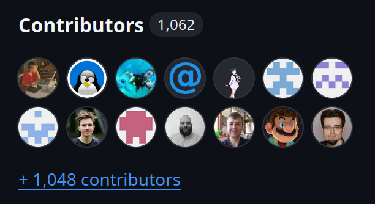
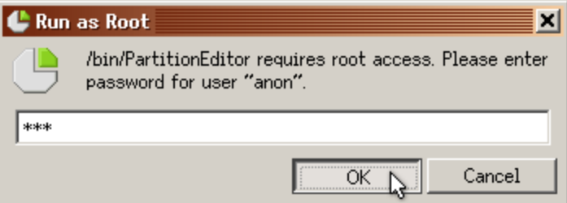
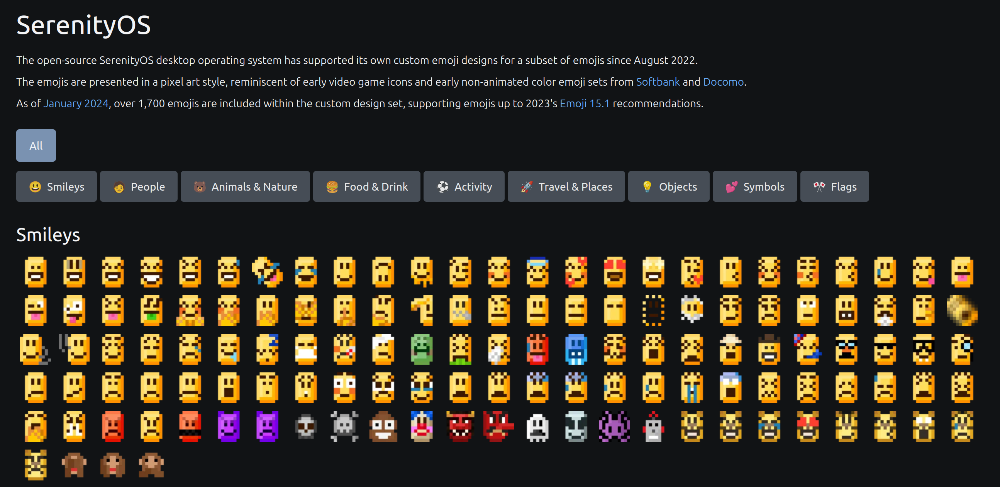
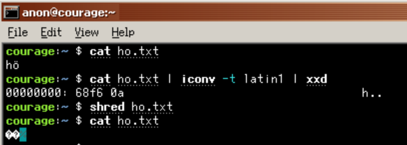
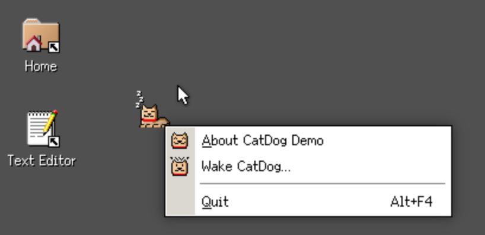

Well hello friends! Today we celebrate the 6th birthday of SerenityOS, counting from the first commit to the repository, on October 10th, 2018.
What follows is a selection of highlights from the past year.
Previous birthdays:
1st |
2nd |
3rd |
4th |
5th
NOTE: This post was published in December 2025, long after SerenityOS's actual 6th birthday, on October 10th 2024.
Andreas, the author of the last posts didn't write new ones after the 5th and while it was missed a lot, it took time before the community decided to create their own.
SerenityOS is a from-scratch desktop operating system that combines a Unix-like core with the look & feel of 1990s productivity software.
The project scope goes all the way from kernel to web browser, and we aim to build everything in-house instead of relying on third-party libraries.
The original developer is Andreas Kling, and he started building this system after finishing a 3-month rehabilitation program for drug addiction in 2018. He shares: "I found myself with a lot of time and nothing to spend it on. So I began building something I'd always wanted to build: my very own dream OS."
A lot has happened since then, and today SerenityOS is a bustling open source community with hundreds of developers from around the world.

In the last year, 103 new people have made their first SerenityOS contribution. That puts us at 1062 happy hackers since the start, according to GitHub. :^)
It's truly amazing how many people have come together to contribute to this project, and it's always nice to see new faces appear on our Discord server
During the year, seven more people reached the 100 commits mark in the project:
USB Support
Loop devices
FAT32?

Previously, to run an application that required privileged permissions (like Partition Editor) you would have to launch them as root.
Now, a new helper program is available to allow normal users to perform these operations: Escalator.
After prompting you for your password, the helper will open the desired application!

Once again emojis coverage has improved over the year.
And thanks to Xexxa, since January 2024 we are now a recognized vendor on emojipedia!

As always, work as been put into making the system more compliant to the UNIX ecosystem. This includes enhancement for our support of Thread Local Storage, fixes and addition of flags for existing core utilities (e.g. cp, truncate) and the implementation of new utilities like iconv, shred and xxd

After years of continuous efforts, CatDog can now go to sleep mode.
We will let him have some rest for now.
A huge thank you to everyone who has contributed over the past year, whether through coding, reporting bugs, improving documentation, creating emojis, spreading the word about SerenityOS, or simply being part of the community. This is what makes the project as vibrant and fun as it is.
This post has been written by two community members, Lucas Chollet and Sönke Holz. FIXME ADD PUBLICATION DATE